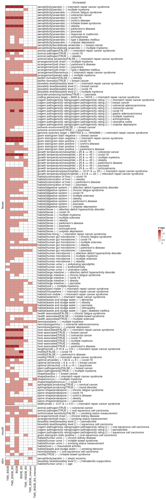
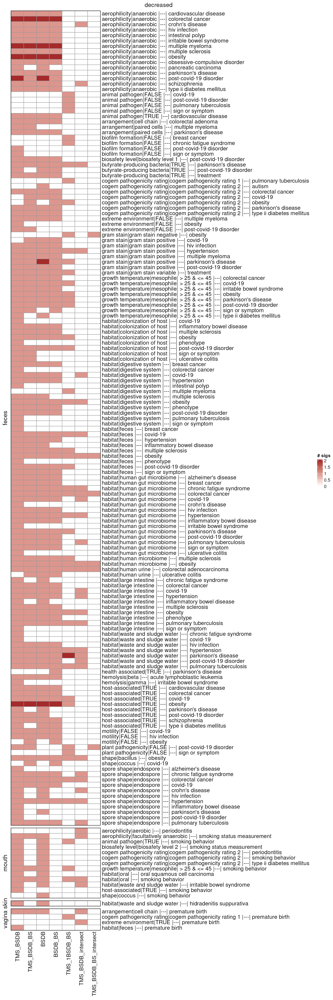
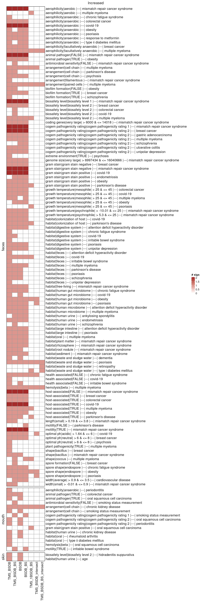
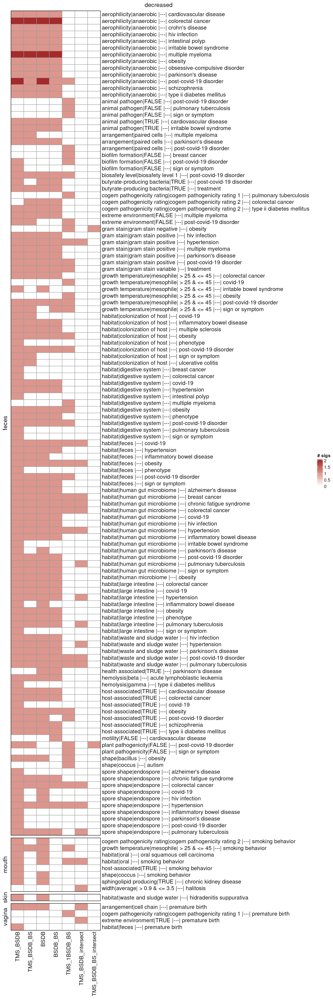

High-throughput ORA with BSDB signatures
Source:vignettes/articles/bsdb_signatures.Rmd
bsdb_signatures.Rmd
library(bugphyzzAnalyses)
library(bugphyzz)
library(bugsigdbr)
library(dplyr)
library(purrr)
library(tidyr)
library(ComplexHeatmap)
library(gridExtra)
library(ggplot2)
body_sites <- c(
skin = "skin", vagina = "vagina", mouth = "mouth", feces = "feces"
)
ranks <- c(genus = "genus", species = "species")
directions <- c(increased = "increased", decreased = "decreased")Introduction
This document aims at running a high-throughput over-representation analysis (ORA) to discover bugphyzz signatures enriched in BugSigDB sets and meta-signatures.
A few backgrounds will be used for the enrichment analysis: 1. TMS_BSDB. Union of all of the taxa in the TypicalMicrobiomeSignatures (TMS) dataset and BugSigDB. 2. TMS_BSDB_BS. Union of all taxa in the TMS dataset and BugSigDB by body site. 3. BSDB. Union of all taxa in BugSigDB. 4. BSDB_BS. Union of all taxa in BugSigDB by body site. 5. TMS_1BSDB_BS. Union of all of the taxa in the TMS dataset by body site plus a target BugSigDB signature. 6. TMS_BSDB_intersect. Intersection of all of the taxa in the TMS dataset and BugSigDB. 7. TMS_BSDB_BS_intersect. Intersection of all of the taxa in the TMS dataset and BugSigDB by body site.
ORA will be performed using a one-sided Fisher’s exact test and the odds ratio and CI will be calculated as well.
Data
Import TypicalMicrobiomeSignatures (TMS):
tms <- importTMS() |>
filter(`Age group` == "adult")
glimpse(tms, 50)
#> Rows: 9,636
#> Columns: 6
#> $ `Age group` <chr> "adult", "adult", "adult", …
#> $ Rank <chr> "genus", "genus", "genus", …
#> $ `NCBI ID` <int> 1912216, 1912216, 1912216, …
#> $ `Taxon name` <chr> "Cutibacterium", "Cutibacte…
#> $ `Body site` <chr> "skin", "vagina", "mouth", …
#> $ Prevalence <dbl> 0.9647577093, 0.0631578947,…Import BugSigDB v1.2.1:
bsdb_doi <- "10.5281/zenodo.10627578" # v1.2.1
# bsdb_doi <- "10.5281/zenodo.10407666" #v1.2.0
# bsdb_doi <- "10.5281/zenodo.6468009" #v1.1.0
bsdb <- importBugSigDB(version = bsdb_doi)
bsdb <- bsdb |>
filter(`Host species` == "Homo sapiens") |>
filter(!is.na(`Abundance in Group 1`)) |>
filter(!is.na(`Body site`)) |>
filter(`Study design` == "case-control" ) |>
filter(
!grepl("(child|infant)", `Group 1 name`, ignore.case = TRUE)
)
dim(bsdb)
#> [1] 1369 50BugSigDB subsets by body site:
uberon <- getOntology(onto = "uberon")
bsdb_subsets_by_bodysite <- vector("list", length(body_sites))
names(bsdb_subsets_by_bodysite) <- body_sites
for (i in seq_along(bsdb_subsets_by_bodysite)) {
if (body_sites[i] == "skin") {
bsdb_subsets_by_bodysite[[i]] <- bsdb |>
filter(grepl(body_sites[i], `Body site`, ignore.case = TRUE))
} else {
bsdb_subsets_by_bodysite[[i]] <- subsetByOntology(
bsdb, column = "Body site", term = body_sites[i], ontology = uberon
)
}
}Bugphyzz:
bp <- importBugphyzz()
names(bp)
#> [1] "aerophilicity"
#> [2] "antimicrobial resistance"
#> [3] "arrangement"
#> [4] "biosafety level"
#> [5] "cogem pathogenicity rating"
#> [6] "disease association"
#> [7] "gram stain"
#> [8] "habitat"
#> [9] "hemolysis"
#> [10] "shape"
#> [11] "spore shape"
#> [12] "animal pathogen"
#> [13] "antimicrobial sensitivity"
#> [14] "biofilm formation"
#> [15] "butyrate-producing bacteria"
#> [16] "extreme environment"
#> [17] "health associated"
#> [18] "host-associated"
#> [19] "hydrogen gas producing"
#> [20] "lactate producing"
#> [21] "motility"
#> [22] "plant pathogenicity"
#> [23] "sphingolipid producing"
#> [24] "spore formation"
#> [25] "coding genes"
#> [26] "genome size"
#> [27] "growth temperature"
#> [28] "length"
#> [29] "mutation rate per site per generation"
#> [30] "mutation rate per site per year"
#> [31] "optimal ph"
#> [32] "width"Signatures
Typical Microbiome Signatures:
thrs <- elbows()
tms_sigs <- vector("list", length(body_sites) * length(ranks))
counter <- 1
for (i in seq_along(body_sites)) {
for (j in seq_along(ranks)) {
tms_name <- paste0(body_sites[i], "_", ranks[j])
names(tms_sigs)[counter] <- tms_name
tms_sigs[[counter]] <- tms |>
filter(`Body site` == body_sites[i], Rank == ranks[j]) |>
filter(Prevalence >= thrs[tms_name]) |>
pull(`NCBI ID`) |>
unique()
counter <- counter + 1
}
}
tms_sigs_BS_gn <- tms_sigs[grep("genus", names(tms_sigs))]
tms_sigs_BS_sp <- tms_sigs[grep("species", names(tms_sigs))]
names(tms_sigs_BS_gn) <- sub("_genus", "", names(tms_sigs_BS_gn))
names(tms_sigs_BS_sp) <- sub("_species", "", names(tms_sigs_BS_sp))
print("Number of taxa")
#> [1] "Number of taxa"
list(
tms_sigs_BS_gn = lengths(tms_sigs_BS_gn),
tms_sigs_BS_sp = lengths(tms_sigs_BS_sp)
)
#> $tms_sigs_BS_gn
#> skin vagina mouth feces
#> 69 57 86 111
#>
#> $tms_sigs_BS_sp
#> skin vagina mouth feces
#> 146 107 295 264BugSigDB signatures:
vec_len <- length(body_sites) * length(ranks) * length(directions)
bsdb_sigs <- vector("list", vec_len)
counter <- 1
for (i in seq_along(body_sites)) {
for (j in seq_along(ranks)) {
for (k in seq_along(directions)) {
dat <- bsdb_subsets_by_bodysite[[i]] |>
filter(`Abundance in Group 1` == directions[k])
sigs <- getSignatures(
df = dat,
tax.id.type = "ncbi", tax.level = ranks[j],
exact.tax.level = FALSE, min.size = 5
) |>
discard(~ length(.x) < 5)
if (!length(sigs)) {
counter <- counter + 1
next
}
bsdb_id <- sub(
pattern = "^(bsdb:[0-9]+/[0-9]+/[0-9]+)_.*$",
replacement = "\\1",
x = names(sigs)
)
pos <- map_int(bsdb_id, ~ which(dat$`BSDB ID` == .x))
new_sigs_names <- paste0(
body_sites[i], "-%-%-", ranks[j], "-%-%-", directions[k],
"-%-%-", tolower(dat$Condition[pos]), "-%-%-",
names(sigs)
)
names(sigs) <- new_sigs_names
bsdb_sigs[[counter]] <- sigs
counter <- counter + 1
}
}
}
bsdb_sigs <- list_flatten(bsdb_sigs)
bsdb_sigs <- discard(bsdb_sigs, is.null)
bsdb_sigs_gn <- bsdb_sigs[grep("-%-%-genus-%-%-", names(bsdb_sigs))]
bsdb_sigs_sp <- bsdb_sigs[grep("-%-%-species-%-%-", names(bsdb_sigs))]
bsdb_sigs_BS_gn <- map(body_sites, ~ {
re <- paste0("^", .x, "-%-%-")
bsdb_sigs_gn[grep(re, names(bsdb_sigs_gn))]
})
bsdb_sigs_BS_sp <- map(body_sites, ~ {
re <- paste0("^", .x, "-%-%-")
bsdb_sigs_sp[grep(re, names(bsdb_sigs_sp))]
})
print("Number of signatures")
#> [1] "Number of signatures"
list(
bsdb_sigs = length(bsdb_sigs),
bsdb_sigs_gn = length(bsdb_sigs_gn),
bsdb_sigs_sp =length(bsdb_sigs_sp),
bsdb_sigs_BS_gn = lengths(bsdb_sigs_BS_gn),
bsdb_sigs_BS_sp = lengths(bsdb_sigs_BS_sp)
)
#> $bsdb_sigs
#> [1] 491
#>
#> $bsdb_sigs_gn
#> [1] 354
#>
#> $bsdb_sigs_sp
#> [1] 137
#>
#> $bsdb_sigs_BS_gn
#> skin vagina mouth feces
#> 13 4 56 281
#>
#> $bsdb_sigs_BS_sp
#> skin vagina mouth feces
#> 7 1 30 99bugphyzz signatures:
bp_sigs_gn <- map(bp, ~ {
makeSignatures(
dat = .x, tax_id_type = "NCBI_ID", tax_level = "genus", min_size = 5,
evidence = c("exp", "igc", "nas", "tas", "tax", "asr")
)
}) |>
discard(is.null) |>
list_flatten(name_spec = "{inner}") |>
map(as.character)
names(bp_sigs_gn) <- paste0(names(bp_sigs_gn), "|genus")
bp_sigs_sp <- map(bp, ~ {
makeSignatures(
dat = .x, tax_id_type = "NCBI_ID", tax_level = "species", min_size = 5,
evidence = c("exp", "igc", "nas", "tas", "tax", "asr")
)
}) |>
discard(is.null) |>
list_flatten(name_spec = "{inner}") |>
map(as.character)
names(bp_sigs_sp) <- paste0(names(bp_sigs_sp), "|species")
bp_sigs <- c(bp_sigs_gn, bp_sigs_sp)
length(bp_sigs)
#> [1] 169Meta-signatures
Meta-signatures:
metasigs_gn_up <- map(bsdb_subsets_by_bodysite, ~ {
getMetaSignatures(
df = .x, column = "Condition", direction = "UP", tax.level = "genus",
min.studies = 1, exact.tax.level = FALSE
)
}) |>
list_flatten(
name_spec = "{outer}-%-%-genus-%-%-increased-%-%-{inner}"
) |>
map(~ names(.x))
metasigs_gn_down <- map(bsdb_subsets_by_bodysite, ~ {
getMetaSignatures(
df = .x, column = "Condition", direction = "DOWN",
tax.level = "genus", exact.tax.level = FALSE, min.studies = 1
)
}) |>
list_flatten(
name_spec = "{outer}-%-%-genus-%-%-decreased-%-%-{inner}"
) |>
map(~ names(.x))
metasigs_sp_up <- map(bsdb_subsets_by_bodysite, ~ {
getMetaSignatures(
df = .x, column = "Condition", direction = "UP",
tax.level = "species", exact.tax.level = FALSE, min.studies = 1
)
}) |>
list_flatten(
name_spec = "{outer}-%-%-species-%-%-increased-%-%-{inner}"
) |>
map(~ names(.x))
metasigs_sp_down <- map(bsdb_subsets_by_bodysite, ~ {
getMetaSignatures(
df = .x, column = "Condition", direction = "DOWN",
tax.level = "species", exact.tax.level = FALSE, min.studies = 1
)
}) |>
list_flatten(
name_spec = "{outer}-%-%-species-%-%-decreased-%-%-{inner}"
) |>
map(~ names(.x))
metasigs_gn <- c(metasigs_gn_up, metasigs_gn_down)
metasigs_sp <- c(metasigs_sp_up, metasigs_sp_down)Meta-sigantures without intersection
removeRepeatedTaxa <- function(up, down) {
x <- map(down, ~ tibble(down = paste0(.x, collapse = ";"))) |>
bind_rows(.id = "name") |>
separate(
col = "name",
into = c("body_site", "rank", "direction", "condition"),
sep = "-%-%-"
) |>
select(-direction) |>
mutate(down = strsplit(down, ";"))
y <- map(up, ~ tibble(up = paste0(.x, collapse = ";"))) |>
bind_rows(.id = "name") |>
separate(
col = "name",
into = c("body_site", "rank", "direction", "condition"),
sep = "-%-%-"
) |>
select(-direction) |>
mutate(up = strsplit(up, ";"))
z <- full_join(x, y)
a <- z |>
rowwise() |>
mutate(intersect = list(intersect(up, down))) |>
mutate(up_unique = list(setdiff(up, intersect))) |>
mutate(down_unique = list(setdiff(down, intersect))) |>
ungroup() |>
select(-down, -up, -intersect)
b <- a |>
rowwise() |>
filter(length(up_unique) > 0) |>
mutate(name = paste0(
body_site, "-%-%-", rank, "-%-%-increased-%-%-", condition
)) |>
ungroup() |>
select(name, up_unique)
c <- a |>
rowwise() |>
filter(length(down_unique) > 0) |>
mutate(name = paste0(
body_site, "-%-%-", rank, "-%-%-decreased-%-%-", condition
)) |>
ungroup() |>
select(name, down_unique)
output1 <- vector("list", nrow(b))
for (i in seq_along(output1)) {
output1[[i]] <- b |>
slice(i) |>
pull(up_unique) |>
unlist()
names(output1)[[i]] <- b |>
slice(i) |>
pull(name)
}
output2 <- vector("list", nrow(c))
for (i in seq_along(output2)) {
output2[[i]] <- c |>
slice(i) |>
pull(down_unique) |>
unlist()
names(output2)[[i]] <- c |>
slice(i) |>
pull(name)
}
list(up = output1, down = output2)
}
umetasigs_gn_list <- removeRepeatedTaxa(metasigs_gn_up, metasigs_gn_down)
umetasigs_gn <- umetasigs_gn_list |>
list_flatten(name_spec = "{inner}")
umetasigs_gn_up <- umetasigs_gn_list$up
umetasigs_gn_down <- umetasigs_gn_list$down
umetasigs_sp_list <- removeRepeatedTaxa(metasigs_sp_up, metasigs_sp_down)
umetasigs_sp <- umetasigs_sp_list |>
list_flatten(name_spec = "{inner}")
umetasigs_sp_up <- umetasigs_sp_list$up
umetasigs_sp_down <- umetasigs_sp_list$downORA with BSDB signatures
Define a function to format the enrichment results for signatures:
formatEnSigs <- function(l) {
## Name is short for: Format Enriched Signatures
## l is the output of microbeSetEnrichment
l |>
bind_rows(.id = "bsdb_sig") |>
separate(
col = "bsdb_sig",
into = c("body_site", "rank", "direction", "condition", "bsdb_sig"),
sep = "-%-%-", remove = TRUE
) |>
mutate(condition = tolower(condition)) |>
mutate_at(.vars = c("p_value", "fdr"), .funs = ~ round(.x, 3)) |>
mutate_at(
.vars = c("odds_ratio", "upper_ci", "lower_ci"),
.funs = ~ round(.x, 2)
) |>
mutate(sig_name = sub(
"^bugphyzz:(.*)\\|(genus|species)$", "\\1", sig_name
)) |>
{\(y) set_names(y, sub("Set", "BSDB", colnames(y)))}()
}Background: TMS_BSDB
Background: Union of all taxa in BSDB and TMS by rank
bk_TMS_BSDB_gn <- unique(c(
unlist(tms_sigs_BS_gn),
unlist(bsdb_sigs_BS_gn)
))
bk_TMS_BSDB_sp <- unique(c(
unlist(tms_sigs_BS_sp),
unlist(bsdb_sigs_BS_sp)
))Enrichment at the genus level:
## TODO investigate warnings
system.time({
en_TMS_BSDB_gn <- map(
.x = bsdb_sigs_gn,
.f = ~ microbeSetEnrichment(.x, bk_TMS_BSDB_gn, bp_sigs_gn)
) |>
formatEnSigs()
})
#> user system elapsed
#> 83.757 0.048 83.809Enrichment at the species level:
system.time({
en_TMS_BSDB_sp <- map(
.x = bsdb_sigs_sp,
.f = ~ microbeSetEnrichment(.x, bk_TMS_BSDB_sp, bp_sigs_sp)
) |>
formatEnSigs()
})
#> user system elapsed
#> 53.353 0.004 53.358Combine results:
en_TMS_BSDB <- bind_rows(en_TMS_BSDB_gn, en_TMS_BSDB_sp)Background: TMS_BSDB_BS
Backgrounds:
bk_TMS_BSDB_BS_gn <- map(body_sites, ~ {
tms_taxa <- tms_sigs_BS_gn[[.x]]
bsdb_taxa <- unlist(bsdb_sigs_BS_gn[[.x]])
unique(c(tms_taxa, bsdb_taxa))
})
bk_TMS_BSDB_BS_sp <- map(body_sites, ~ {
tms_taxa <- tms_sigs_BS_sp[[.x]]
bsdb_taxa <- unlist(bsdb_sigs_BS_sp[[.x]])
unique(c(tms_taxa, bsdb_taxa))
})Enrichment at the genus level:
system.time({
en_TMS_BSDB_BS_gn <- vector("list", length(body_sites))
for (i in seq_along(body_sites)) {
bk <- bk_TMS_BSDB_BS_gn[[body_sites[i]]]
sigL <- bsdb_sigs_BS_gn[[body_sites[i]]]
res <- map(sigL, ~ microbeSetEnrichment(.x, bk, bp_sigs_gn)) |>
formatEnSigs()
en_TMS_BSDB_BS_gn[[i]] <- res
}
en_TMS_BSDB_BS_gn <- bind_rows(en_TMS_BSDB_BS_gn)
})
#> user system elapsed
#> 83.206 0.040 83.251Enrichment at the species level:
system.time({
en_TMS_BSDB_BS_sp <- vector("list", length(body_sites))
for (i in seq_along(body_sites)) {
bk <- bk_TMS_BSDB_BS_sp[[body_sites[i]]]
sigList <- bsdb_sigs_BS_sp[[body_sites[i]]]
res <- map(sigList, ~ microbeSetEnrichment(.x, bk, bp_sigs_sp)) |>
formatEnSigs()
en_TMS_BSDB_BS_sp[[i]] <- res
}
en_TMS_BSDB_BS_sp <- bind_rows(en_TMS_BSDB_BS_sp)
})
#> user system elapsed
#> 51.087 0.008 51.099Combine results:
en_TMS_BSDB_BS <- bind_rows(en_TMS_BSDB_BS_gn, en_TMS_BSDB_BS_sp)Background: BSDB
BSDB: Union of all BSDB signatures by rank
ORA at the genus level:
system.time({
en_BSDB_gn <- map(
.x = bsdb_sigs_gn,
.f = ~ microbeSetEnrichment(.x, bk_BSDB_gn, bp_sigs_gn)
) |>
formatEnSigs()
})
#> user system elapsed
#> 84.463 0.048 84.516ORA at the species level:
system.time({
en_BSDB_sp <- map(
.x = bsdb_sigs_sp,
.f = ~ microbeSetEnrichment(.x, bk_BSDB_sp, bp_sigs_sp)
) |>
formatEnSigs()
})
#> user system elapsed
#> 51.260 0.016 51.280Combine results:
en_BSDB <- bind_rows(en_BSDB_gn, en_BSDB_sp)Background: BSDB_BS
Union of all BSDB signatures by body site by rank.
Create backgrounds:
bk_BSDB_BS_gn <- map(bsdb_sigs_BS_gn, ~ unique(unlist(.x))) |>
discard(is.null)
bk_BSDB_BS_sp <- map(bsdb_sigs_BS_sp, ~ unique(unlist(.x))) |>
discard(is.null)Enrichment at the genus level:
system.time({
en_BSDB_BS_gn <- vector("list", length(body_sites))
for (i in seq_along(body_sites)) {
bk <- bk_BSDB_BS_gn[[body_sites[i]]]
sigL <- bsdb_sigs_BS_gn[[body_sites[i]]]
res <- map(sigL, ~ microbeSetEnrichment(.x, bk, bp_sigs_gn)) |>
formatEnSigs()
en_BSDB_BS_gn[[i]] <- res
}
en_BSDB_BS_gn <- bind_rows(en_BSDB_BS_gn)
})
#> user system elapsed
#> 82.194 0.012 82.210Enrichment at the species level:
system.time({
en_BSDB_BS_sp <- vector("list", length(body_sites))
for (i in seq_along(body_sites)) {
bk <- bk_BSDB_BS_sp[[body_sites[i]]]
re <- paste0("^", body_sites[i], "-%-%-")
sigL <- bsdb_sigs_sp[grep(re, names(bsdb_sigs_sp))]
res <- map(sigL, ~ microbeSetEnrichment(.x, bk, bp_sigs_sp)) |>
formatEnSigs()
en_BSDB_BS_sp[[i]] <- res
}
en_BSDB_BS_sp <- bind_rows(en_BSDB_BS_sp)
})
#> user system elapsed
#> 49.804 0.020 49.827Combine results
en_BSDB_BS <- bind_rows(en_BSDB_BS_gn, en_BSDB_BS_sp)Background: TMS_1BSDB_BS
Background(s):
bk_TMS_1BSDB_BS <- vector("list", length(bsdb_sigs))
for (i in seq_along(bk_TMS_1BSDB_BS)) {
sig_name <- names(bsdb_sigs)[i]
names(bk_TMS_1BSDB_BS)[i] <- sig_name
bodysite_name <- sub(
"^(\\w+)-%-%-(species|genus)-%-%-.*$", "\\1", sig_name
)
rank_name <- sub(
"^(\\w+)-%-%-(species|genus)-%-%-.*$", "\\2", sig_name
)
tms_sig_name <- paste0(bodysite_name, "_", rank_name)
bk_TMS_1BSDB_BS[[i]] <- unique(
c(as.character(bsdb_sigs[[i]]), as.character(tms_sigs[[tms_sig_name]]))
)
}Enrichment at the genus level:
system.time({
bk_TMS_1BSDB_BS_gn <- bk_TMS_1BSDB_BS[names(bsdb_sigs_gn)]
en_TMS_1BSDB_BS_gn <- map2(bsdb_sigs_gn, bk_TMS_1BSDB_BS_gn, ~ {
microbeSetEnrichment(set = .x, reference = .y, sigs = bp_sigs_gn)
}) |>
formatEnSigs()
})
#> user system elapsed
#> 79.082 0.028 79.113Enrichment at the species level:
system.time({
bk_TMS_1BSDB_BS_sp <- bk_TMS_1BSDB_BS[names(bsdb_sigs_sp)]
en_TMS_1BSDB_BS_sp <- map2(bsdb_sigs_sp, bk_TMS_1BSDB_BS_sp, ~ {
microbeSetEnrichment(set = .x, reference = .y, sigs = bp_sigs_sp)
}) |>
formatEnSigs()
})
#> user system elapsed
#> 48.173 0.016 48.191
en_TMS_1BSDB_BS <- bind_rows(en_TMS_1BSDB_BS_gn, en_TMS_1BSDB_BS_sp)Background: TMS_BSDB_intersect
Intersection at the genus level:
tms_gn_x = unique(unlist(tms_sigs_BS_gn))
bsdb_gn_y = unique(unlist(bsdb_sigs_BS_gn))
bk_TMS_BSDB_intersect_gn <- intersect(tms_gn_x, bsdb_gn_y)
data.frame(
tms_genus_only = length(setdiff(tms_gn_x, bk_TMS_BSDB_intersect_gn)),
bsdb_genus_only = length(setdiff(bsdb_gn_y, bk_TMS_BSDB_intersect_gn)),
tms_bsdb_genus_intersect = length(bk_TMS_BSDB_intersect_gn)
) |>
knitr::kable()| tms_genus_only | bsdb_genus_only | tms_bsdb_genus_intersect |
|---|---|---|
| 33 | 316 | 174 |
Intersection at the species level:
tms_sp_x = unique(unlist(tms_sigs_BS_sp))
bsdb_sp_y = unique(unlist(bsdb_sigs_BS_sp))
bk_TMS_BSDB_intersect_sp <- intersect(tms_sp_x, bsdb_sp_y)
data.frame(
tms_species_only = length(setdiff(tms_sp_x, bk_TMS_BSDB_intersect_sp)),
bsdb_species_only = length(setdiff(bsdb_sp_y, bk_TMS_BSDB_intersect_sp)),
tms_bsdb_species_intersect = length(bk_TMS_BSDB_intersect_sp)
) |>
knitr::kable()| tms_species_only | bsdb_species_only | tms_bsdb_species_intersect |
|---|---|---|
| 335 | 503 | 301 |
Enrichment at the genus level:
system.time({
en_TMS_BSDB_intersect_gn <- map(
bsdb_sigs_gn,
~ microbeSetEnrichment(.x, bk_TMS_BSDB_intersect_gn, bp_sigs_gn)
) |>
formatEnSigs()
})
#> user system elapsed
#> 80.109 0.028 80.144Enrichment at the species level:
system.time({
en_TMS_BSDB_intersect_sp <- map(
bsdb_sigs_sp,
~ microbeSetEnrichment(.x, bk_TMS_BSDB_intersect_sp, bp_sigs_sp)
) |>
formatEnSigs()
})
#> user system elapsed
#> 47.896 0.016 47.926Combine results
en_TMS_BSDB_intersect <- bind_rows(
en_TMS_BSDB_intersect_gn, en_TMS_BSDB_intersect_sp
)Background: TMS_BSDB_BS_intersect
Intersection by body site at the genus level:
l1 <- map(body_sites, ~ {
x <- unique(unlist(bsdb_sigs_BS_gn[[.x]]))
y <- tms_sigs_BS_gn[[.x]]
xy <- intersect(x, y)
x_ <- setdiff(x, xy)
y_ <- setdiff(y, xy)
list(
bsdb_only = x_,
tms_only = y_,
both = xy
)
})
bk_TMS_BSDB_BS_intersect_gn <- map(l1, ~ .x$both)
l1 |>
map(~ as.data.frame(matrix(map_int(.x, length), nrow = 1))) |>
bind_rows(.id = "body_site") |>
set_names(c("body_site", "bsdb_genus_only", "tms_genus_only", "genus_both"))
#> body_site bsdb_genus_only tms_genus_only genus_both
#> 1 skin 21 39 30
#> 2 vagina 9 42 15
#> 3 mouth 50 25 61
#> 4 feces 347 11 100Intersection by body site at the species level:
l2 <- map(body_sites, ~ {
x <- unique(unlist(bsdb_sigs_BS_sp[[.x]]))
y <- tms_sigs_BS_sp[[.x]]
xy <- intersect(x, y)
x_ <- setdiff(x, xy)
y_ <- setdiff(y, xy)
list(
bsdb_only = x_,
tms_only = y_,
both = xy
)
})
bk_TMS_BSDB_BS_intersect_sp <- map(l2, ~ .x$both)
l2 |>
map(~ as.data.frame(matrix(map_int(.x, length), nrow = 1))) |>
bind_rows(.id = "body_site") |>
set_names(
c("body_site", "bsdb_species_only", "tms_species_only", "species_both")
)
#> body_site bsdb_species_only tms_species_only species_both
#> 1 skin 27 138 8
#> 2 vagina 4 103 4
#> 3 mouth 55 183 112
#> 4 feces 507 110 154Enrichment at the genus level:
system.time({
en_TMS_BSDB_BS_intersect_gn <- vector("list", length(body_sites))
for (i in seq_along(body_sites)) {
bk <- bk_TMS_BSDB_BS_intersect_gn[[body_sites[i]]]
sigL <- bsdb_sigs_BS_gn[[body_sites[i]]]
res <- map(sigL, ~ microbeSetEnrichment(.x, bk, bp_sigs_gn)) |>
formatEnSigs()
en_TMS_BSDB_BS_intersect_gn[[i]] <- res
}
en_TMS_BSDB_BS_intersect_gn <- bind_rows(en_TMS_BSDB_BS_intersect_gn)
})
#> user system elapsed
#> 77.973 0.004 77.987Enrichment at the species level:
system.time({
en_TMS_BSDB_BS_intersect_sp <- vector("list", length(body_sites))
for (i in seq_along(body_sites)) {
bk <- bk_TMS_BSDB_BS_intersect_sp[[body_sites[i]]]
sigL <- bsdb_sigs_BS_sp[[body_sites[i]]]
res <- map(sigL, ~ microbeSetEnrichment(.x, bk, bp_sigs_sp)) |>
formatEnSigs()
en_TMS_BSDB_BS_intersect_sp[[i]] <- res
}
en_TMS_BSDB_BS_intersect_sp <- bind_rows(en_TMS_BSDB_BS_intersect_sp)
})
#> user system elapsed
#> 46.298 0.004 46.309
en_TMS_BSDB_BS_intersect <- bind_rows(
en_TMS_BSDB_BS_intersect_gn, en_TMS_BSDB_BS_intersect_sp
)Combine ORA results
Store all results in a single list:
results <- list(
TMS_BSDB = en_TMS_BSDB,
TMS_BSDB_BS = en_TMS_BSDB_BS,
BSDB = en_BSDB,
BSDB_BS = en_BSDB_BS,
TMS_1BSDB_BS = en_TMS_1BSDB_BS,
TMS_BSDB_intersect = en_TMS_BSDB_intersect,
TMS_BSDB_BS_intersect = en_TMS_BSDB_BS_intersect
) |>
map(~ mutate(.x, fdr = p.adjust(p_value))) |>
map(~ mutate(.x, combination = paste0(
body_site, "-#-#-", direction, "-#-#-", rank, "-#-#-",
condition, "-#-#-", sig_name, "-#-#-", bsdb_sig)
))Adjust FDR and filter:
filtered_results <- map(results, ~ filter(.x, fdr < 0.1))
map(filtered_results, dim)
#> $TMS_BSDB
#> [1] 358 17
#>
#> $TMS_BSDB_BS
#> [1] 288 17
#>
#> $BSDB
#> [1] 295 17
#>
#> $BSDB_BS
#> [1] 247 17
#>
#> $TMS_1BSDB_BS
#> [1] 140 17
#>
#> $TMS_BSDB_intersect
#> [1] 76 17
#>
#> $TMS_BSDB_BS_intersect
#> [1] 24 17Visualization
Define functions:
createMat <- function(dat, fdr_th = 0.1, dir) {
dat <- dat |>
dplyr::filter(
.data$fdr < fdr_th, .data$direction == dir
)
output <- dat |>
count(
body_site, direction, condition, sig_name
) |>
{\(y) split(y, y$direction)}() |>
map(~ split(.x, .x$body_site)) |>
list_flatten() |>
discard(~ !nrow(.x)) |>
bind_rows() |>
mutate(sig_name = factor(sig_name), condition = factor(condition)) |>
{\(y) split(y, y$body_site)}() |>
map(~ {
mat <- .x |>
select(-body_site, -direction) |>
complete(sig_name, condition, fill = list(n = 0)) |>
pivot_wider(
names_from = "condition", values_from = "n", values_fill = 0
) |>
tibble::column_to_rownames(var = "sig_name") |>
as.matrix()
select_cols <- which(as.logical(colSums(mat)))
mat[, select_cols, drop = FALSE]
})
output
}
createHt <- function(x, max_count) {
color_fun <- circlize::colorRamp2(
breaks = c(0, max_count),
colors = c("white", "brown")
)
lht <- vector("list", length(x))
for (i in seq_along(x)) {
xmat <- x[[i]]
xmat <- xmat[sort(rownames(xmat)),, drop = FALSE]
xmat <- xmat[,sort(colnames(xmat)), drop = FALSE]
if (i == length(lht)) {
lht[[i]] <- Heatmap(
matrix = xmat,
col = color_fun,
show_column_dend = FALSE,
show_row_dend = FALSE,
name = "# sigs",
border = TRUE,
column_title = names(x)[i],
row_names_side = "left",
column_title_rot = 45,
column_names_rot = 45,
row_order = rownames(xmat),
# column_order = colnames(xmat),
row_names_max_width = max_text_width(
rownames(xmat),
gp = gpar(fontsize = 12)
),
rect_gp = gpar(col = "gray60", lwd = 1)
)
} else {
lht[[i]] <- Heatmap(
matrix = xmat,
col = color_fun,
show_column_dend = FALSE,
show_row_dend = FALSE,
border = TRUE,
show_heatmap_legend = FALSE,
column_title = names(x)[i],
row_names_side = "left",
column_title_rot = 45,
column_names_rot = 45,
row_order = rownames(xmat),
# column_order = colnames(xmat),
row_names_max_width = max_text_width(
rownames(xmat),
gp = gpar(fontsize = 12)
),
rect_gp = gpar(col = "gray60", lwd = 1)
)
}
}
reduce(lht, `+`)
}
myFun <- function(x) {
x |>
as.data.frame() |>
tibble::rownames_to_column("sig") |>
pivot_longer(
names_to = "condition", values_to = "presence", cols = 2:last_col()
) |>
filter(presence > 0) |>
unite(col = "combination", sep = " |---| ", sig, condition)
}
combinationHt <- function(l, max_count) {
color_fun <- circlize::colorRamp2(
breaks = c(0, max_count),
colors = c("white", "brown")
)
xvar <- l |>
map(~ map(.x, function(x) myFun(x))) |>
map(~ distinct(bind_rows(.x, .id = "bs"))) |>
bind_rows(.id = "bk") |>
mutate(
bs = factor(bs), combination = factor(combination),
bk = factor(bk)
) |>
{\(y) split(y, y$bs)}() |>
map(~select(.x, -bs)) |>
map(~ {
.x |>
complete(combination, bk, fill = list(presence = 0)) |>
pivot_wider(
names_from = "bk", values_from = "presence", values_fill = 0
) |>
tibble::column_to_rownames(var = "combination") |>
as.matrix()
}) |>
map(~ {
select_row <- which(rowSums(.x) > 0)
.x[select_row, , drop = FALSE]
}) |>
imap(~{
.x <- .x[sort(rownames(.x)), , drop = FALSE]
order_of_columns <- c(
"TMS_BSDB", "TMS_BSDB_BS", "BSDB", "BSDB_BS",
"TMS_1BSDB_BS", "TMS_BSDB_intersect",
"TMS_BSDB_BS_intersect"
)
Heatmap(
matrix = .x,
show_row_names = TRUE,
show_row_dend = FALSE,
show_column_dend = FALSE,
row_dend_reorder = FALSE,
column_dend_reorder = FALSE,
row_title = .y,
col = color_fun,
name = "# sigs",
row_order = rownames(.x),
column_order = order_of_columns,
row_names_max_width = max_text_width(
rownames(.x),
gp = gpar(fontsize = 12)
),
rect_gp = gpar(col = "gray60", lwd = 1),
border = TRUE
)
})
reduce(xvar, ~ .x %v% .y)
}Create matrices
lmat_down = map(results, ~ createMat(.x, dir = "decreased"))
lmat_up = map(results, ~ createMat(.x, dir = "increased"))
## This variables are used in the functions defined above
maxCountSig <- max(unlist(c(lmat_down, lmat_up)))
## Create heatmaps, but don't display them unless it's required
# l_ht_down <- map(lmat_down, createHt)
# l_ht_up <- map(lmat_up, createHt)
ht_comb_up <- combinationHt(lmat_up, maxCountSig)
draw(ht_comb_up, column_title = "Increased")
ht_comb_down <- combinationHt(lmat_down, maxCountSig)
draw(ht_comb_down, column_title = "Decreased")
ORA with BSDB meta-signatures
Define function for formatting enrichment results with meta-signatures:
formatEnMetSig <- function(l) {
l |>
bind_rows(.id = "bsdb_sig") |>
separate(
col = "bsdb_sig",
into = c(
"body_site", "rank", "direction", "condition"
), sep = "-%-%-", remove = TRUE
) |>
mutate(condition = tolower(condition)) |>
mutate_at(.vars = c("p_value", "fdr"), .funs = ~ round(.x, 3)) |>
mutate_at(
.vars = c("odds_ratio", "upper_ci", "lower_ci"),
.funs = ~ round(.x, 2)
) |>
mutate(sig_name = sub(
"^bugphyzz:(.*)\\|(genus|species)$", "\\1", sig_name
)) |>
{\(y) set_names(y, sub("Set", "BSDB", colnames(y)))}()
}Background: BSDB
system.time({
en_meta_BSDB_gn <- map(
metasigs_gn, ~ microbeSetEnrichment(.x, bk_BSDB_gn, bp_sigs_gn)
) |>
formatEnMetSig()
})
#> user system elapsed
#> 38.603 0.004 38.612
system.time({
en_meta_BSDB_sp <- map(
metasigs_sp, ~ microbeSetEnrichment(.x, bk_BSDB_sp, bp_sigs_sp)
) |>
formatEnMetSig()
})
#> user system elapsed
#> 31.479 0.008 31.498
en_meta_BSDB <- bind_rows(en_meta_BSDB_gn, en_meta_BSDB_sp) Background: BSDB_BS
genus:
system.time({
en_meta_BSDB_BS_gn <- vector("list", length(body_sites))
for (i in seq_along(body_sites)) {
bk <- bk_BSDB_BS_gn[[body_sites[i]]]
rx <- paste0(body_sites[i], "-%-%-")
sigL <- metasigs_gn[grep(rx, names(metasigs_gn))]
res <- map(sigL, ~ microbeSetEnrichment(.x, bk, bp_sigs_gn)) |>
formatEnMetSig()
en_meta_BSDB_BS_gn[[i]] <- res
}
en_meta_BSDB_BS_gn <- bind_rows(en_meta_BSDB_BS_gn)
})
#> user system elapsed
#> 37.404 0.016 37.423species:
system.time({
en_meta_BSDB_BS_sp <- vector("list", length(body_sites))
for (i in seq_along(body_sites)) {
bk <- bk_BSDB_BS_sp[[body_sites[i]]]
rx <- paste0(body_sites[i], "-%-%-")
sig_list <- metasigs_sp[grep(rx, names(metasigs_sp))]
res <- map(sig_list, ~ microbeSetEnrichment(.x, bk, bp_sigs_sp)) |>
formatEnMetSig()
en_meta_BSDB_BS_sp[[i]] <- res
}
en_meta_BSDB_BS_sp <- bind_rows(en_meta_BSDB_BS_sp)
})
#> user system elapsed
#> 29.952 0.008 29.963
en_meta_BSDB_BS <- bind_rows(en_meta_BSDB_BS_gn, en_meta_BSDB_BS_sp)Background: TMS_BSDB
system.time({
en_meta_TMS_BSDB_gn <- map(
.x = metasigs_gn,
.f = ~ microbeSetEnrichment(.x, bk_TMS_BSDB_gn, bp_sigs_gn)
) |>
formatEnMetSig()
})
#> user system elapsed
#> 38.186 0.028 38.218Enrichment at the species level:
system.time({
en_meta_TMS_BSDB_sp <- map(
.x = metasigs_sp,
.f = ~ microbeSetEnrichment(.x, bk_TMS_BSDB_sp, bp_sigs_sp)
) |>
formatEnMetSig()
})
#> user system elapsed
#> 32.346 0.008 32.355
en_meta_TMS_BSDB <- bind_rows(en_meta_TMS_BSDB_gn, en_meta_TMS_BSDB_sp)Background: TMS_BSDB_BS
system.time({
en_meta_TMS_BSDB_BS_gn <- vector("list", length(body_sites))
for (i in seq_along(body_sites)) {
bk <- bk_TMS_BSDB_BS_gn[[body_sites[i]]]
rx <- paste0(body_sites[i], "-%-%-")
sig_list <- metasigs_gn[grep(rx, names(metasigs_gn))]
res <- map(sig_list, ~ microbeSetEnrichment(.x, bk, bp_sigs_gn)) |>
formatEnMetSig()
en_meta_TMS_BSDB_BS_gn[[i]] <- res
}
en_meta_TMS_BSDB_BS_gn <- bind_rows(en_meta_TMS_BSDB_BS_gn)
})
#> user system elapsed
#> 37.523 0.012 37.539
system.time({
en_meta_TMS_BSDB_BS_sp <- vector("list", length(body_sites))
for (i in seq_along(body_sites)) {
bk <- bk_TMS_BSDB_BS_sp[[body_sites[i]]]
rx <- paste0(body_sites[i], "-%-%-")
sig_list <- metasigs_sp[grep(rx, names(metasigs_sp))]
res <- map(sig_list, ~ microbeSetEnrichment(.x, bk, bp_sigs_sp)) |>
formatEnMetSig()
en_meta_TMS_BSDB_BS_sp[[i]] <- res
}
en_meta_TMS_BSDB_BS_sp <- bind_rows(en_meta_TMS_BSDB_BS_sp)
})
#> user system elapsed
#> 30.765 0.024 30.791
en_meta_TMS_BSDB_BS <- bind_rows(
en_meta_TMS_BSDB_BS_gn, en_meta_TMS_BSDB_BS_sp
) Background: TMS_BSDB_intersect
genus:
system.time({
en_meta_TMS_BSDB_intersect_gn <- map(
metasigs_gn,
~ microbeSetEnrichment(.x, bk_TMS_BSDB_intersect_gn, bp_sigs_gn)
) |>
formatEnMetSig()
})
#> user system elapsed
#> 36.362 0.020 36.386species:
system.time({
en_meta_TMS_BSDB_intersect_sp <- map(
metasigs_sp,
~ microbeSetEnrichment(.x, bk_TMS_BSDB_intersect_sp, bp_sigs_sp)
) |>
formatEnMetSig()
})
#> user system elapsed
#> 29.091 0.016 29.108
en_meta_TMS_BSDB_intersect <- bind_rows(
en_meta_TMS_BSDB_intersect_gn, en_meta_TMS_BSDB_intersect_sp
)Bacgkround: TMS_BSDB_BS_intersect
system.time({
en_meta_TMS_BSDB_BS_intersect_gn <- vector("list", length(body_sites))
for (i in seq_along(body_sites)) {
bk <- bk_TMS_BSDB_BS_intersect_gn[[body_sites[i]]]
rx <- paste0(body_sites[i], "-%-%-")
sig_list <- metasigs_gn[grep(rx, names(metasigs_gn))]
res <- map(sig_list, ~ microbeSetEnrichment(.x, bk, bp_sigs_gn)) |>
formatEnMetSig()
en_meta_TMS_BSDB_BS_intersect_gn[[i]] <- res
}
en_meta_TMS_BSDB_BS_intersect_gn <- bind_rows(
en_meta_TMS_BSDB_BS_intersect_gn
)
})
#> user system elapsed
#> 35.532 0.040 35.575
system.time({
en_meta_TMS_BSDB_BS_intersect_sp <- vector("list", length(body_sites))
for (i in seq_along(body_sites)) {
bk <- bk_TMS_BSDB_BS_intersect_sp[[body_sites[i]]]
rx <- paste0(body_sites[i], "-%-%-")
sig_list <- metasigs_sp[grep(rx, names(metasigs_sp))]
res <- map(sig_list, ~ microbeSetEnrichment(.x, bk, bp_sigs_sp)) |>
formatEnMetSig()
en_meta_TMS_BSDB_BS_intersect_sp[[i]] <- res
}
en_meta_TMS_BSDB_BS_intersect_sp <- bind_rows(
en_meta_TMS_BSDB_BS_intersect_sp
)
})
#> user system elapsed
#> 28.480 0.008 28.489
en_meta_TMS_BSDB_BS_intersect <- bind_rows(
en_meta_TMS_BSDB_BS_intersect_gn, en_meta_TMS_BSDB_BS_intersect_sp
) Background: TMS_1BSDB_BS
metasigs <- c(metasigs_gn, metasigs_sp)
bk_meta_TMS_1BSDB_BS <- vector("list", length(metasigs))
for (i in seq_along(bk_meta_TMS_1BSDB_BS)) {
sig_name <- names(metasigs)[i]
names(bk_TMS_1BSDB_BS)[i] <- sig_name
bodysite_name <- sub("^(\\w+)-%-%-(species|genus)-%-%-.*$", "\\1", sig_name)
rank_name <- sub("^(\\w+)-%-%-(species|genus)-%-%-.*$", "\\2", sig_name)
tms_sig_name <- paste0(bodysite_name, "_", rank_name)
bk_TMS_1BSDB_BS[[i]] <- unique(
c(as.character(bsdb_sigs[[i]]), as.character(tms_sigs[[tms_sig_name]]))
)
}Enrichment at the genus level:
system.time({
bk_TMS_1BSDB_BS_gn <- bk_TMS_1BSDB_BS[names(metasigs_gn)]
en_meta_TMS_1BSDB_BS_gn <- map2(metasigs_gn, bk_TMS_1BSDB_BS_gn, ~ {
microbeSetEnrichment(set = .x, reference = .y, sigs = bp_sigs_gn)
}) |>
formatEnMetSig()
})
#> user system elapsed
#> 35.961 0.020 35.983Enrichment at the species level:
system.time({
bk_TMS_1BSDB_BS_sp <- bk_TMS_1BSDB_BS[names(metasigs_sp)]
en_meta_TMS_1BSDB_BS_sp <- map2(metasigs_sp, bk_TMS_1BSDB_BS_sp, ~ {
microbeSetEnrichment(set = .x, reference = .y, sigs = bp_sigs_sp)
}) |>
formatEnMetSig()
})
#> user system elapsed
#> 28.865 0.016 28.886
en_meta_TMS_1BSDB_BS <- bind_rows(
en_meta_TMS_1BSDB_BS_gn, en_meta_TMS_1BSDB_BS_sp
)Combine ORA results
meta_results <- list(
BSDB = en_meta_BSDB,
BSDB_BS = en_meta_BSDB_BS,
TMS_BSDB = en_meta_TMS_BSDB,
TMS_BSDB_BS = en_meta_TMS_BSDB_BS,
TMS_BSDB_intersect = en_meta_TMS_BSDB_intersect,
TMS_BSDB_BS_intersect = en_meta_TMS_BSDB_BS_intersect,
TMS_1BSDB_BS = en_meta_TMS_1BSDB_BS
) |>
map(~ mutate(.x, fdr = p.adjust(p_value))) |>
map(~ mutate(.x, combination = paste0(
body_site, "-#-#-", direction, "-#-#-", rank, "-#-#-",
condition, "-#-#-", sig_name)
))Adjust p-value and filter by FDR:
filtered_meta_results <- map(meta_results, ~ filter(.x, fdr < 0.1))
map(filtered_meta_results, dim)
#> $BSDB
#> [1] 272 16
#>
#> $BSDB_BS
#> [1] 226 16
#>
#> $TMS_BSDB
#> [1] 312 16
#>
#> $TMS_BSDB_BS
#> [1] 248 16
#>
#> $TMS_BSDB_intersect
#> [1] 53 16
#>
#> $TMS_BSDB_BS_intersect
#> [1] 14 16
#>
#> $TMS_1BSDB_BS
#> [1] 80 16Visualization
meta_lmat_down = map(filtered_meta_results, ~ createMat(.x, dir = "decreased"))
meta_lmat_up = map(filtered_meta_results, ~ createMat(.x, dir = "increased"))
maxCountMeta <- max(unlist(c(meta_lmat_down, meta_lmat_up)))
meta_ht_comb_up <- combinationHt(meta_lmat_up, maxCountMeta)
draw(meta_ht_comb_up, column_title = "Increased")
meta_ht_comb_down <- combinationHt(meta_lmat_down, maxCountMeta)
draw(meta_ht_comb_down, column_title = "decreased")
ORA with BSDB unique meta-signatures
Background: BSDB
system.time({
en_umeta_BSDB_gn <- map(
umetasigs_gn, ~ microbeSetEnrichment(.x, bk_BSDB_gn, bp_sigs_gn)
) |>
formatEnMetSig()
})
#> user system elapsed
#> 37.785 0.012 37.799
system.time({
en_umeta_BSDB_sp <- map(
umetasigs_sp, ~ microbeSetEnrichment(.x, bk_BSDB_sp, bp_sigs_sp)
) |>
formatEnMetSig()
})
#> user system elapsed
#> 31.349 0.012 31.362
en_umeta_BSDB <- bind_rows(en_umeta_BSDB_gn, en_umeta_BSDB_sp)Background: BSDB_BS
genus:
system.time({
en_umeta_BSDB_BS_gn <- vector("list", length(body_sites))
for (i in seq_along(body_sites)) {
bk <- bk_BSDB_BS_gn[[body_sites[i]]]
rx <- paste0(body_sites[i], "-%-%-")
sig_list <- umetasigs_gn[grep(rx, names(umetasigs_gn))]
res <- map(sig_list, ~ microbeSetEnrichment(.x, bk, bp_sigs_gn)) |>
formatEnMetSig()
en_umeta_BSDB_BS_gn[[i]] <- res
}
en_umeta_BSDB_BS_gn <- bind_rows(en_umeta_BSDB_BS_gn)
})
#> user system elapsed
#> 37.085 0.012 37.099species:
system.time({
en_umeta_BSDB_BS_sp <- vector("list", length(body_sites))
for (i in seq_along(body_sites)) {
bk <- bk_BSDB_BS_sp[[body_sites[i]]]
rx <- paste0(body_sites[i], "-%-%-")
sig_list <- umetasigs_sp[grep(rx, names(umetasigs_sp))]
res <- map(sig_list, ~ microbeSetEnrichment(.x, bk, bp_sigs_sp)) |>
formatEnMetSig()
en_umeta_BSDB_BS_sp[[i]] <- res
}
en_umeta_BSDB_BS_sp <- bind_rows(en_umeta_BSDB_BS_sp)
})
#> user system elapsed
#> 30.185 0.024 30.212
en_umeta_BSDB_BS <- bind_rows(en_umeta_BSDB_BS_gn, en_umeta_BSDB_BS_sp)Background: TMS_BSDB
system.time({
en_umeta_TMS_BSDB_gn <- map(
.x = umetasigs_gn,
.f = ~ microbeSetEnrichment(.x, bk_TMS_BSDB_gn, bp_sigs_gn)
) |>
formatEnMetSig()
})
#> user system elapsed
#> 38.042 0.004 38.050Enrichment at the species level:
system.time({
en_umeta_TMS_BSDB_sp <- map(
.x = umetasigs_sp,
.f = ~ microbeSetEnrichment(.x, bk_TMS_BSDB_sp, bp_sigs_sp)
) |>
formatEnMetSig()
})
#> user system elapsed
#> 32.256 0.004 32.261
en_umeta_TMS_BSDB <- bind_rows(en_umeta_TMS_BSDB_gn, en_umeta_TMS_BSDB_sp)Background: TMS_BSDB_BS
system.time({
en_umeta_TMS_BSDB_BS_gn <- vector("list", length(body_sites))
for (i in seq_along(body_sites)) {
bk <- bk_TMS_BSDB_BS_gn[[body_sites[i]]]
rx <- paste0(body_sites[i], "-%-%-")
sig_list <- umetasigs_gn[grep(rx, names(umetasigs_gn))]
res <- map(sig_list, ~ microbeSetEnrichment(.x, bk, bp_sigs_gn)) |>
formatEnMetSig()
en_umeta_TMS_BSDB_BS_gn[[i]] <- res
}
en_umeta_TMS_BSDB_BS_gn <- bind_rows(en_umeta_TMS_BSDB_BS_gn)
})
#> user system elapsed
#> 37.260 0.008 37.268
system.time({
en_umeta_TMS_BSDB_BS_sp <- vector("list", length(body_sites))
for (i in seq_along(body_sites)) {
bk <- bk_TMS_BSDB_BS_sp[[body_sites[i]]]
rx <- paste0(body_sites[i], "-%-%-")
sig_list <- umetasigs_sp[grep(rx, names(umetasigs_sp))]
res <- map(sig_list, ~ microbeSetEnrichment(.x, bk, bp_sigs_sp)) |>
formatEnMetSig()
en_umeta_TMS_BSDB_BS_sp[[i]] <- res
}
en_umeta_TMS_BSDB_BS_sp <- bind_rows(en_umeta_TMS_BSDB_BS_sp)
})
#> user system elapsed
#> 30.459 0.020 30.479
en_umeta_TMS_BSDB_BS <- bind_rows(
en_umeta_TMS_BSDB_BS_gn, en_umeta_TMS_BSDB_BS_sp
)Background: TMS_BSDB_intersect
genus:
system.time({
en_umeta_TMS_BSDB_intersect_gn <- map(
umetasigs_gn,
~ microbeSetEnrichment(.x, bk_TMS_BSDB_intersect_gn, bp_sigs_gn)
) |>
formatEnMetSig()
})
#> user system elapsed
#> 36.036 0.020 36.060species:
system.time({
en_umeta_TMS_BSDB_intersect_sp <- map(
umetasigs_sp,
~ microbeSetEnrichment(.x, bk_TMS_BSDB_intersect_sp, bp_sigs_sp)
) |>
formatEnMetSig()
})
#> user system elapsed
#> 29.105 0.008 29.114
en_umeta_TMS_BSDB_intersect <- bind_rows(
en_umeta_TMS_BSDB_intersect_gn, en_umeta_TMS_BSDB_intersect_sp
)Bacgkround: TMS_BSDB_BS_intersect
system.time({
en_umeta_TMS_BSDB_BS_intersect_gn <- vector("list", length(body_sites))
for (i in seq_along(body_sites)) {
bk <- bk_TMS_BSDB_BS_intersect_gn[[body_sites[i]]]
rx <- paste0(body_sites[i], "-%-%-")
sig_list <- umetasigs_gn[grep(rx, names(umetasigs_gn))]
res <- map(sig_list, ~ microbeSetEnrichment(.x, bk, bp_sigs_gn)) |>
formatEnMetSig()
en_umeta_TMS_BSDB_BS_intersect_gn[[i]] <- res
}
en_umeta_TMS_BSDB_BS_intersect_gn <- bind_rows(
en_umeta_TMS_BSDB_BS_intersect_gn
)
})
#> user system elapsed
#> 35.413 0.024 35.438
system.time({
en_umeta_TMS_BSDB_BS_intersect_sp <- vector("list", length(body_sites))
for (i in seq_along(body_sites)) {
bk <- bk_TMS_BSDB_BS_intersect_sp[[body_sites[i]]]
rx <- paste0(body_sites[i], "-%-%-")
sig_list <- umetasigs_sp[grep(rx, names(umetasigs_sp))]
res <- map(sig_list, ~ microbeSetEnrichment(.x, bk, bp_sigs_sp)) |>
formatEnMetSig()
en_umeta_TMS_BSDB_BS_intersect_sp[[i]] <- res
}
en_umeta_TMS_BSDB_BS_intersect_sp <- bind_rows(
en_umeta_TMS_BSDB_BS_intersect_sp
)
})
#> user system elapsed
#> 28.567 0.008 28.576
en_umeta_TMS_BSDB_BS_intersect <- bind_rows(
en_umeta_TMS_BSDB_BS_intersect_gn, en_umeta_TMS_BSDB_BS_intersect_sp
)Background: TMS_1BSDB_BS
umetasigs <- c(umetasigs_gn, umetasigs_sp)
bk_umeta_TMS_1BSDB_BS <- vector("list", length(umetasigs))
for (i in seq_along(bk_umeta_TMS_1BSDB_BS)) {
sig_name <- names(umetasigs)[i]
names(bk_umeta_TMS_1BSDB_BS)[i] <- sig_name
bodysite_name <- sub("^(\\w+)-%-%-(species|genus)-%-%-.*$", "\\1", sig_name)
rank_name <- sub("^(\\w+)-%-%-(species|genus)-%-%-.*$", "\\2", sig_name)
tms_sig_name <- paste0(bodysite_name, "_", rank_name)
bk_umeta_TMS_1BSDB_BS[[i]] <- unique(
c(as.character(bsdb_sigs[[i]]), as.character(tms_sigs[[tms_sig_name]]))
)
}Enrichment at the genus level:
system.time({
bk_umeta_TMS_1BSDB_BS_gn <- bk_umeta_TMS_1BSDB_BS[names(umetasigs_gn)]
en_umeta_TMS_1BSDB_BS_gn <- map2(umetasigs_gn, bk_umeta_TMS_1BSDB_BS_gn, ~ {
microbeSetEnrichment(set = .x, reference = .y, sigs = bp_sigs_gn)
}) |>
formatEnMetSig()
})
#> user system elapsed
#> 35.738 0.024 35.763Enrichment at the species level:
system.time({
bk_umeta_TMS_1BSDB_BS_sp <- bk_umeta_TMS_1BSDB_BS[names(umetasigs_sp)]
en_umeta_TMS_1BSDB_BS_sp <- map2(umetasigs_sp, bk_umeta_TMS_1BSDB_BS_sp, ~ {
microbeSetEnrichment(set = .x, reference = .y, sigs = bp_sigs_sp)
}) |>
formatEnMetSig()
})
#> user system elapsed
#> 29.217 0.016 29.236
en_umeta_TMS_1BSDB_BS <- bind_rows(
en_umeta_TMS_1BSDB_BS_gn, en_umeta_TMS_1BSDB_BS_sp
)Combine ORA results
umeta_results <- list(
BSDB = en_umeta_BSDB,
BSDB_BS = en_umeta_BSDB_BS,
TMS_BSDB = en_umeta_TMS_BSDB,
TMS_BSDB_BS = en_umeta_TMS_BSDB_BS,
TMS_BSDB_intersect = en_umeta_TMS_BSDB_intersect,
TMS_BSDB_BS_intersect = en_umeta_TMS_BSDB_BS_intersect,
TMS_1BSDB_BS = en_umeta_TMS_1BSDB_BS
) |>
map(~ mutate(.x, fdr = p.adjust(p_value))) |>
map(~ mutate(.x, combination = paste0(
body_site, "-#-#-", direction, "-#-#-", rank, "-#-#-",
condition, "-#-#-", sig_name)
))Filter results
filtered_umeta_results <- map(umeta_results, ~ filter(.x, fdr < 0.1))
map(filtered_umeta_results, dim)
#> $BSDB
#> [1] 202 16
#>
#> $BSDB_BS
#> [1] 174 16
#>
#> $TMS_BSDB
#> [1] 243 16
#>
#> $TMS_BSDB_BS
#> [1] 196 16
#>
#> $TMS_BSDB_intersect
#> [1] 32 16
#>
#> $TMS_BSDB_BS_intersect
#> [1] 9 16
#>
#> $TMS_1BSDB_BS
#> [1] 63 16Visualization
umeta_lmat_down = map(
filtered_umeta_results, ~ createMat(.x, dir = "decreased")
)
umeta_lmat_up = map(
filtered_umeta_results, ~ createMat(.x, dir = "increased")
)
maxCountumeta <- max(unlist(c(umeta_lmat_down, umeta_lmat_up)))
umeta_ht_comb_up <- combinationHt(umeta_lmat_up, maxCountumeta)
draw(umeta_ht_comb_up, column_title = "Increased")
umeta_ht_comb_down <- combinationHt(umeta_lmat_down, maxCountumeta)
draw(umeta_ht_comb_down, column_title = "decreased")
Tables
Results of enrichment using signatures
resDF <- filtered_results |>
bind_rows(.id = "background")
myDataTable(resDF)Results of enrichment using meta-signatures
metaResDF <- filtered_meta_results |>
bind_rows(.id = "background")
myDataTable(metaResDF)Results of enrichment using unique meta-signatures
umetaResDF <- filtered_umeta_results |>
bind_rows(.id = "background")
myDataTable(umetaResDF)Session info
sessioninfo::session_info()
#> ─ Session info ───────────────────────────────────────────────────────────────
#> setting value
#> version R version 4.3.2 (2023-10-31)
#> os Ubuntu 22.04.3 LTS
#> system x86_64, linux-gnu
#> ui X11
#> language en
#> collate en_US.UTF-8
#> ctype en_US.UTF-8
#> tz Etc/UTC
#> date 2024-03-13
#> pandoc 3.1.1 @ /usr/local/bin/ (via rmarkdown)
#>
#> ─ Packages ───────────────────────────────────────────────────────────────────
#> package * version date (UTC) lib source
#> BiocFileCache 2.10.1 2023-10-26 [1] Bioconductor
#> BiocGenerics 0.48.1 2023-11-01 [1] Bioconductor
#> bit 4.0.5 2022-11-15 [1] RSPM (R 4.3.0)
#> bit64 4.0.5 2020-08-30 [1] RSPM (R 4.3.0)
#> blob 1.2.4 2023-03-17 [1] RSPM (R 4.3.0)
#> bold 1.3.0 2023-05-02 [1] RSPM (R 4.3.0)
#> bslib 0.6.1 2023-11-28 [1] RSPM (R 4.3.0)
#> bugphyzz * 0.0.1.4 2024-03-13 [1] Github (waldronlab/bugphyzz@6e0363d)
#> bugphyzzAnalyses * 0.1.0 2024-03-13 [1] local
#> bugsigdbr * 1.8.4 2024-02-21 [1] Bioconductor 3.18 (R 4.3.2)
#> cachem 1.0.8 2023-05-01 [1] RSPM (R 4.3.0)
#> Cairo 1.6-2 2023-11-28 [1] RSPM (R 4.3.0)
#> circlize 0.4.16 2024-02-20 [1] RSPM (R 4.3.0)
#> cli 3.6.2 2023-12-11 [1] RSPM (R 4.3.0)
#> clue 0.3-65 2023-09-23 [1] RSPM (R 4.3.0)
#> cluster 2.1.4 2022-08-22 [2] CRAN (R 4.3.2)
#> codetools 0.2-19 2023-02-01 [2] CRAN (R 4.3.2)
#> colorspace 2.1-0 2023-01-23 [1] RSPM (R 4.3.0)
#> ComplexHeatmap * 2.18.0 2023-10-24 [1] Bioconductor
#> conditionz 0.1.0 2019-04-24 [1] RSPM (R 4.3.0)
#> crayon 1.5.2 2022-09-29 [1] RSPM (R 4.3.0)
#> crosstalk 1.2.1 2023-11-23 [1] RSPM (R 4.3.0)
#> crul 1.4.0 2023-05-17 [1] RSPM (R 4.3.0)
#> curl 5.2.1 2024-03-01 [1] RSPM (R 4.3.0)
#> data.table 1.15.2 2024-02-29 [1] RSPM (R 4.3.0)
#> DBI 1.2.2 2024-02-16 [1] RSPM (R 4.3.0)
#> dbplyr 2.4.0 2023-10-26 [1] RSPM (R 4.3.0)
#> desc 1.4.3 2023-12-10 [1] RSPM (R 4.3.0)
#> digest 0.6.35 2024-03-11 [1] RSPM (R 4.3.0)
#> doParallel 1.0.17 2022-02-07 [1] RSPM (R 4.3.0)
#> dplyr * 1.1.4 2023-11-17 [1] RSPM (R 4.3.0)
#> DT 0.32 2024-02-19 [1] RSPM (R 4.3.0)
#> ellipsis 0.3.2 2021-04-29 [1] RSPM (R 4.3.0)
#> epitools 0.5-10.1 2020-03-22 [1] RSPM (R 4.3.0)
#> evaluate 0.23 2023-11-01 [1] RSPM (R 4.3.0)
#> fansi 1.0.6 2023-12-08 [1] RSPM (R 4.3.0)
#> fastmap 1.1.1 2023-02-24 [1] RSPM (R 4.3.0)
#> filelock 1.0.3 2023-12-11 [1] RSPM (R 4.3.0)
#> foreach 1.5.2 2022-02-02 [1] RSPM (R 4.3.0)
#> fs 1.6.3 2023-07-20 [1] RSPM (R 4.3.0)
#> generics 0.1.3 2022-07-05 [1] RSPM (R 4.3.0)
#> GetoptLong 1.0.5 2020-12-15 [1] RSPM (R 4.3.0)
#> ggplot2 * 3.5.0 2024-02-23 [1] RSPM (R 4.3.0)
#> GlobalOptions 0.1.2 2020-06-10 [1] RSPM (R 4.3.0)
#> glue 1.7.0 2024-01-09 [1] RSPM (R 4.3.0)
#> gridExtra * 2.3 2017-09-09 [1] RSPM (R 4.3.0)
#> gtable 0.3.4 2023-08-21 [1] RSPM (R 4.3.0)
#> highr 0.10 2022-12-22 [1] RSPM (R 4.3.0)
#> hms 1.1.3 2023-03-21 [1] RSPM (R 4.3.0)
#> hoardr 0.5.4 2024-01-23 [1] RSPM (R 4.3.0)
#> htmltools 0.5.7 2023-11-03 [1] RSPM (R 4.3.0)
#> htmlwidgets 1.6.4 2023-12-06 [1] RSPM (R 4.3.0)
#> httpcode 0.3.0 2020-04-10 [1] RSPM (R 4.3.0)
#> httr 1.4.7 2023-08-15 [1] RSPM (R 4.3.0)
#> IRanges 2.36.0 2023-10-24 [1] Bioconductor
#> iterators 1.0.14 2022-02-05 [1] RSPM (R 4.3.0)
#> jquerylib 0.1.4 2021-04-26 [1] RSPM (R 4.3.0)
#> jsonlite 1.8.8 2023-12-04 [1] RSPM (R 4.3.0)
#> knitr 1.45 2023-10-30 [1] RSPM (R 4.3.0)
#> lifecycle 1.0.4 2023-11-07 [1] RSPM (R 4.3.0)
#> magrittr 2.0.3 2022-03-30 [1] RSPM (R 4.3.0)
#> matrixStats 1.2.0 2023-12-11 [1] RSPM (R 4.3.0)
#> memoise 2.0.1 2021-11-26 [1] RSPM (R 4.3.0)
#> munsell 0.5.0 2018-06-12 [1] RSPM (R 4.3.0)
#> ontologyIndex 2.12 2024-02-27 [1] RSPM (R 4.3.0)
#> pillar 1.9.0 2023-03-22 [1] RSPM (R 4.3.0)
#> pkgconfig 2.0.3 2019-09-22 [1] RSPM (R 4.3.0)
#> pkgdown 2.0.7 2022-12-14 [1] RSPM (R 4.3.0)
#> png 0.1-8 2022-11-29 [1] RSPM (R 4.3.0)
#> purrr * 1.0.2 2023-08-10 [1] RSPM (R 4.3.0)
#> R6 2.5.1 2021-08-19 [1] RSPM (R 4.3.0)
#> ragg 1.2.7 2023-12-11 [1] RSPM (R 4.3.0)
#> rappdirs 0.3.3 2021-01-31 [1] RSPM (R 4.3.0)
#> RColorBrewer 1.1-3 2022-04-03 [1] RSPM (R 4.3.0)
#> readr 2.1.5 2024-01-10 [1] RSPM (R 4.3.0)
#> rjson 0.2.21 2022-01-09 [1] RSPM (R 4.3.0)
#> rlang 1.1.3 2024-01-10 [1] RSPM (R 4.3.0)
#> rmarkdown 2.26 2024-03-05 [1] RSPM (R 4.3.0)
#> RSQLite 2.3.5 2024-01-21 [1] RSPM (R 4.3.0)
#> S4Vectors 0.40.2 2023-11-23 [1] Bioconductor 3.18 (R 4.3.2)
#> sass 0.4.8 2023-12-06 [1] RSPM (R 4.3.0)
#> scales 1.3.0 2023-11-28 [1] RSPM (R 4.3.0)
#> sessioninfo 1.2.2 2021-12-06 [1] RSPM (R 4.3.0)
#> shape 1.4.6.1 2024-02-23 [1] RSPM (R 4.3.0)
#> stringi 1.8.3 2023-12-11 [1] RSPM (R 4.3.0)
#> systemfonts 1.0.6 2024-03-07 [1] RSPM (R 4.3.0)
#> taxa 0.4.3 2024-02-20 [1] RSPM (R 4.3.0)
#> taxize 1.0 2024-03-13 [1] Github (ropensci/taxize@bcff2a6)
#> taxizedb 0.3.1 2023-04-03 [1] RSPM (R 4.3.0)
#> textshaping 0.3.7 2023-10-09 [1] RSPM (R 4.3.0)
#> tibble 3.2.1 2023-03-20 [1] RSPM (R 4.3.0)
#> tidyr * 1.3.1 2024-01-24 [1] RSPM (R 4.3.0)
#> tidyselect 1.2.1 2024-03-11 [1] RSPM (R 4.3.0)
#> tzdb 0.4.0 2023-05-12 [1] RSPM (R 4.3.0)
#> utf8 1.2.4 2023-10-22 [1] RSPM (R 4.3.0)
#> uuid 1.2-0 2024-01-14 [1] RSPM (R 4.3.0)
#> vctrs 0.6.5 2023-12-01 [1] RSPM (R 4.3.0)
#> vroom 1.6.5 2023-12-05 [1] RSPM (R 4.3.0)
#> withr 3.0.0 2024-01-16 [1] RSPM (R 4.3.0)
#> xfun 0.42 2024-02-08 [1] RSPM (R 4.3.0)
#> xml2 1.3.6 2023-12-04 [1] RSPM (R 4.3.0)
#> yaml 2.3.8 2023-12-11 [1] RSPM (R 4.3.0)
#>
#> [1] /usr/local/lib/R/site-library
#> [2] /usr/local/lib/R/library
#>
#> ──────────────────────────────────────────────────────────────────────────────